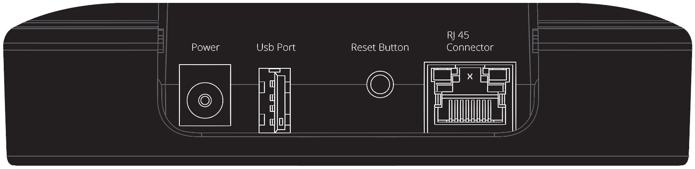
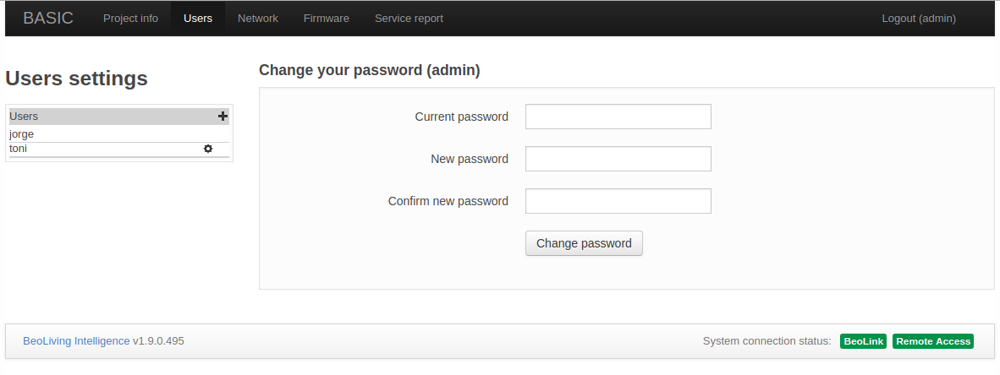
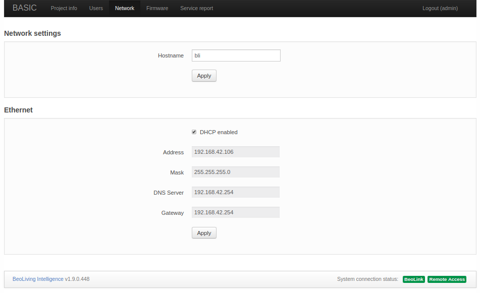
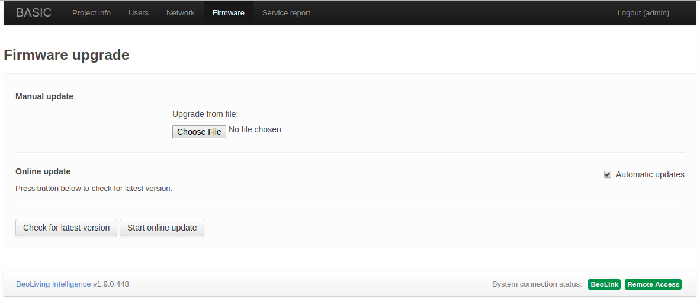
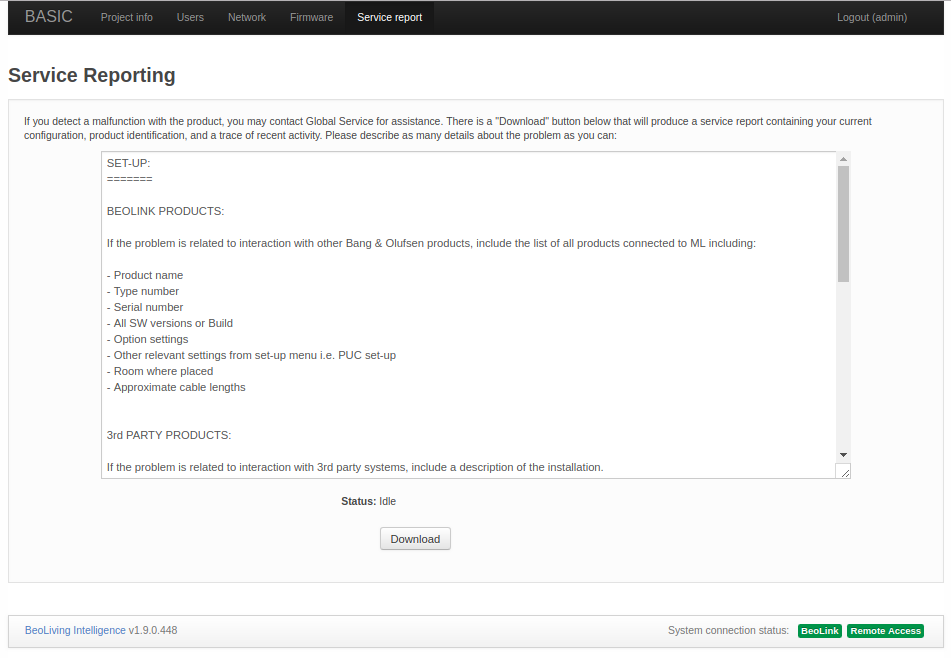

Introduction
This guide provides:
- A description of all the elements that come inside a BeoLiving Intelligence box.
- How to find an access a BeoLiving Intelligence within the network.
- An introduction to the BeoLiving Intelligence functionalities.
- An overview of the different sections of its web interface.
BeoLiving Intelligence comes out of the box with a big limitation in all the functionalities it could offer. To use it in its full capabilities, you should upgrade your BeoLiving Intelligence to PRO mode. This will allow for full integration of Bang & Olufsen NetworkLink audio and video products with several Home Automation systems such as Nest, Philips Hue, KNX and Lutron, among others. (see section Upgrade to PRO, or refer to BeoLiving Intelligence PRO User Guide for futher information),
Most of BeoLiving Intelligence configuration and usage it’s done through the BeoLiving App. This Smart Device application lets you customize your installation and control all devices in it. BeoLiving Intelligence also provides a web interface, which out of the box provides Network settings and User access control management. After upgrading your controller to BeoLiving Intelligence PRO, the web interface becomes the most important tool for installation, configuration and programming.
BeoLiving Intelligence provides support in two ways:
- Hassle free integration of Bang & Olufsen NetworkLink A/V systems with other control systems, without extra boxes.
- Control of the entire home via either a Bang & Olufsen remote control, the BeoLiving App, or the overlay menus on a Bang & Olufsen TV.
Terminology
- BeoLiving Intelligence: Controller as it comes from out of the box.
- BeoLiving Intelligence PRO: Controller with full capabilities.
- BLI: Alias for BeoLiving Intelligence.
- BLI PRO: Alias for BeoLiving Intelligence PRO.
- BLApp: BeoLiving App.
- LAN: Local Area Network.
- DHCP: Dynamic Host Configuration Protocol.
- PoE: Power over Ethernet.
What’s inside the box
After opening the box of BLI you will find:
- BLI hardware.
- Wall bracket for BLI.
- AC power supply.
- Quick setup guide.
BeoLiving Intelligence hardware description
Connection Panel
Located on the back of the BLI:
- Power: Powers the BLI.
- USB Port: Used for service purposes.
- System Reset Button: Press it for 8 seconds for resetting the system.
- RJ 45 Connector: For connecting the BeoLiving Intelligence to a local network (PoE capable).

User Led and Button
- User LED: The user LED is used to signalize the current state of the BLI, using different colours and ON-OFF patterns combination. Colours could be Green, Red or Yellow and the patterns could be Solid, Flash and Quick Flash. For more information about different BLI LED states refer to Led States section.
- User Button: This button is intended for user confirmation and button function input. For more information refer to Button Functions section.

Led States
All the possible user LED states with their respective meaning are shown in the following table.
| Activity | LED state |
|---|---|
| Normal operation | Solid Green |
| Critical error | Red / Yellow flash |
| Firmware update | Green quick flash |
| Loading configuration | Green quick flash |
| Waiting for User confirmation | Green / Yellow quick flash |
| User confirmation acknowledge | Solid Yellow |
| Boot | Red / Yellow transition |
Accessing the BeoLiving Intelligence
The BLI presents a web interface that can be accessed from a network browser. By default, BLI is configured DHCP mode, meaning that it gets the IP address from the router it is connected to.
IP address discovery suggestions
- Look up for “_hipservices._tcp” using an application that supports Zero-configuration, such as the Safari browser or the avahi-browse command.
- Use a network scanner/IP-scanner (e.g. Fing) on the same network as the BLI.
- Access your LAN router and search for the assigned IP to BLI.
Set static IP address mode
A static IP-address can be set to the BLI by accessing through the web interface, as described in the Network section.
Direct access
The BLI can be set to the factory default IP-address 192.168.1.10 by activating the Setup button function (3); see Button Functions. Once this address is set, you can access it directly using a network browser by using an Ethernet crossover cable. Note that he computer must have an IP address in the same range, e.g. 192.168.1.11 with subnet mask 255.255.255.0.
User button
BLI has a button accessible in the upper side which provides several functions during normal operation:
- Function 1: Reserved.
- Function 2: Set admin password to “admin” during the next 5 minutes. Check the Setup interface section for further information.
- Function 3: Set network settings to fixed IP (192.168.1.10).
- Function 4: Set network settings to use DHCP.
- Function 5: Erase all configuration and settings.
To execute a function, press and hold the setup button. This will cycle through all available functions as indicated by the LED blinking (it will first blink one meaning function 1, after a while it will blink twice meaning function 2 and so on).
Release the button when you get to the desired function number and the LED will start to blink, press the setup button again in order to confirm the function execution.
In addition to being used to confirm the input function, a single press during normal operation is used to fire System event (refer to BeoLiving Intelligence PRO User Guide).
Web interface usage
The initial page after accessing the BLI via web browser shows two buttons: WEBPANEL and SETUP.
- WEBPANEL: This interface offers home automation control of your setup. Control of NetworkLink products is not supported, only Scenes could be fired. Being PRO, besides NetworkLink products, it will be possible to control all your installation.
- SETUP: This interface is used for configuring/programming your BLI setup.
Setup interface
The Setup web interface for a BLI does not offer a high degree of customization. In fact, this interface should be used in exceptional cases as for example: Upgrade your BLI to PRO (see section Upgrade to PRO for further information). After upgrading the Setup web interface is the most important tool for configuring and programming your setup.
An installer can access the BLI setup interface with the admin user. To reinforce security, admin password is by default unknown. If for some reason it is necessary to make use of the Setup web interface, the admin password can be reset by activating the Setup button function (2). After the button function input, admin password will be “admin” for the next 5 minutes. After login you will be immediately asked to modify it.
Upgrade to PRO

At the top menu bar, BASIC access page could be found. This page contains information regarding your BLI and Licensing information. In Product information, License type shows the current license of your BLI and for BLI’s with BASIC license Click to upgrade link is showed. This link will redirect your browser to Khimo.com to start the upgrade process. Payment is done through PayPal.
After payment process finishes, your BLI will start the upgrade process immediately which could last one minute approximately.
Project info
The Project information page is used to state information regarding the project BeoLiving Intelligence is part of. This information could be useful in any later service situation.
- Project name: Name for the project.
- Display name: Name of the BLI that will be shown in all the controller interfaces, such as BeoLiving App and WEBPANEL. Examples of display name are: the family name or the street address of the house.
- Installer name: Reference name of the installer/company in charge of this project.
- Installer contact: Any type of contact information to reach the installer/company in charge of this project for future questions or comments.
Users

The Users page shows in the left column every user that can access the BLI. New users can be added by admin by pressing the “plus” button.
User properties
- Change user password: this can be performed only on users that were created by admin.
- Enable/Disable User management access: when selected, the user is allowed to manage users and user rights. For example, this option should be set only for the owner of the installation.
- Enable/Disable Controller: allows user to have access to BLI via BLApp. When disabled, the only access is via WEBPANEL.
Select zone access for user
In this section, select the zones the user has access to. All zones of the installation are displayed as checkboxes that enable/disable access to it. All zone access means that the user can control any zone of the installation.
Network
The Network page contains the network connectivity configuration of BLI.

The configurable setting are:
- Hostname: Name of BLI as it is found in the LAN.
- DHCP: Enable/Disable DHCP mode. Per factory default, DHCP mode is enabled.
- Address: If DHCP is disabled, the static BLI network address could be set in Address.
- Mask: Network mask related to BLI LAN.
- DNS Server: DNS Server network address in LAN.
- Gateway: Gateway address in LAN.
Any change to the settings must be made permanent by pressing the Apply button.
Firmware
The Firmware page allows to check and apply updates for the BLI Firmware. There are two ways to perform such updates:
- Manually uploading a BLI firmware file.
- Online update via Internet.
Manual update
Press the Choose File to select your local BLI firmware file. Automatically will be uploaded to BLI, and the update should begin immediately.
Online update
For performing an online update to the BLI Firmware you must ensure that LAN network has Internet connection.

- Check for latest version: After pressed, the lastest official Firmware version will be displayed, if available.
- Start online update: If a new Firmware version is available for download, pressing this button will start the Firmware download and installation process.
- Automatic updates: Enable/Disable automatic BLI Firmware updates. If this option is selected, then the BLI firmware will be automatically kept up to date.
Service report
When any hardware or software error is experienced it is possible to create a service report containing the necessary information about your BLI for solving any potential issue.
You must fill the form showed in that page. This information is essential to reproduce and fix any issue you are experiencing.

Service reports are created and downloaded when Download button is clicked.